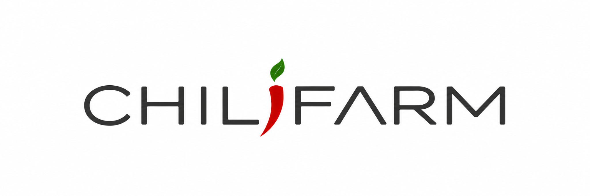

Sense
Soil and environment
OPEN SOURCE LAB · MIT LICENSE

Grow smarter. Stay in control.
Designed around Raspberry Pi Pico 2 W, soil sensing and safe local irrigation, with a planned self-hosted telemetry platform.
Soil and environment
Lighting and irrigation
History and status
The public dashboard uses synthetic data. Live integration and hardware validation are pending.
The source code is available under the MIT License. If you find this project useful, consider supporting its development.